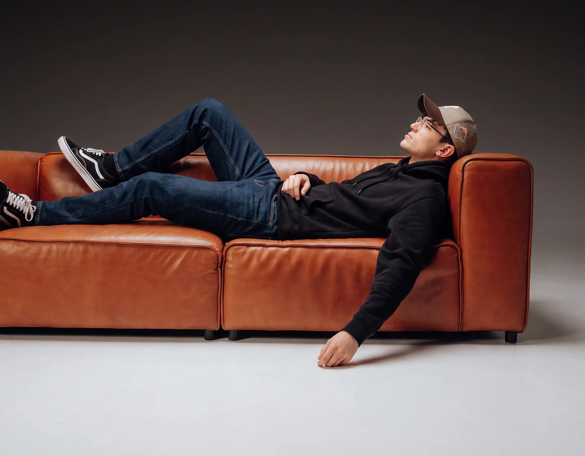

Soy Facundo, diseñador en Comunicación Visual y qfadesign es mi marca personal de diseño.
Transformo ideas en soluciones visuales con intención.
- Observador
- Creativo
- Estratégico
- Detallista
Para mí, diseñar es tomar decisiones, construir una identidad y comunicar una idea de forma clara.
Sobre mí
Soy Facundo Cruz, diseñador en Comunicación Visual. Con qfadesign, mi marca personal, ayudo a emprendimientos y empresas a construir una identidad clara y coherente, desde el logo hasta el packaging, las redes y la web.
Primero entiendo qué necesita la marca y a quién le habla. De ahí salen las decisiones: concepto, color, tipografía y sistema, para que cada pieza tenga una razón de ser y sea fácil de usar para quien la reciba.
- Especialidad
- Branding e identidad visual
- También hago
- Motion graphics, diseño editorial, social media y páginas web
- Contacto
- qfadesignn@gmail.com
Trabajos destacados
 Desarrollos inmobiliarios · Identidad de marca
Desarrollos inmobiliarios · Identidad de marca
Árbol
El crecimiento sostenido hecho símbolo: raíces que dan estabilidad y ramas que abren oportunidades.
Ver proyecto → Juguetes didácticos · Manual de marca
Juguetes didácticos · Manual de marca
Bleko
Manual de identidad de 37 páginas: logo, color, tipografía, sistema de piezas y packaging.
Ver proyecto → Pastelería · Identidad visual
Pastelería · Identidad visual
Dulcemente
Rosado, crema y chocolate, íconos y una tipografía fluida para una marca artesanal.
Ver proyecto → Cafetería y panadería · Identidad de marca
Cafetería y panadería · Identidad de marca
Miga
Un proyecto propio: logo, color, packaging, redes y hasta el frente del local, todo desde cero.
Ver proyecto →Qué hago
Branding
Identidades completas, coherentes y memorables, de la visión a la personalidad visual.
Motion Graphics
Texto, ilustraciones y formas en movimiento para comunicar ideas de forma dinámica.
Social Media
Contenidos atractivos y coherentes para que cada publicación transmita el mensaje correcto.
Diseño de Logos
Logos únicos, representativos y adaptables que conectan de inmediato con el público.
Páginas web
Sitios a medida, claros, rápidos y pensados para verse bien en cualquier pantalla.
Y más…
Packaging, afiches, posters, publicidades y edición de fotografía.
Aplicaciones que uso
Avanzado
- Adobe Illustrator
- Adobe Photoshop
- Adobe After Effects
- Figma
Intermedio
- Adobe InDesign
- Adobe Premiere Pro
- Canva

Me gusta transformar ideas en imágenes, marcas y piezas que comuniquen de verdad.